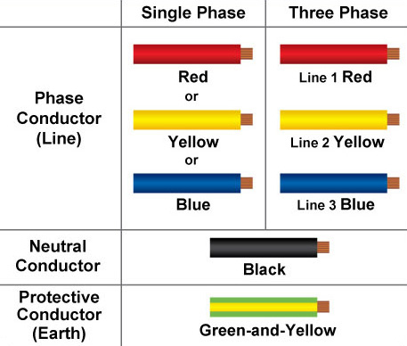
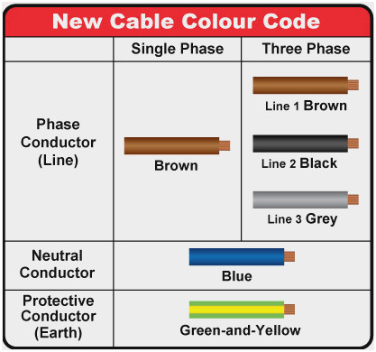
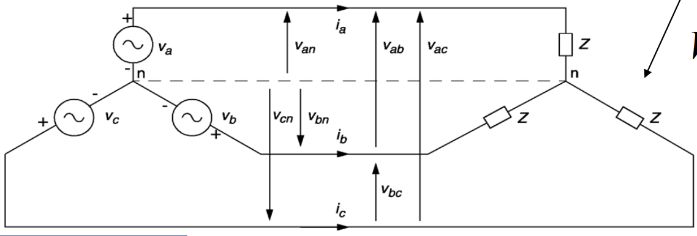

class: center, middle # EE-361 # 3-PHASE TRANSFORMERS ## Ozan Keysan [ozan.keysan.me](http://ozan.keysan.me) Office: C-113 <span class="meta">•</span> Tel: 210 7586 --- ## Electric Plugs & Sockets <img src="https://www.adaptelec.com/images/info_pages/turkey.jpg" alt="Drawing" style="width: 250px;"/> ### [Different plugs around the world](http://www.worldstandards.eu/electricity/plugs-and-sockets/) ### [Why some countries use different voltage, frequency?](https://www.quora.com/Why-does-India-use-230-V-50HZ-while-the-USA-uses-120V-60HZ) --- # Introduction to Three Phase ## Electric Plugs & Sockets  [Different plugs around the world](http://www.worldstandards.eu/electricity/plugs-and-sockets/), [but WHY?](https://www.quora.com/Why-does-India-use-230-V-50HZ-while-the-USA-uses-120V-60HZ) --- # Introduction to Three Phase ## Industrial Electric Plugs <img src="https://www.industrialextensionleads.co.uk/ekmps/shops/bazzer1/images/4pin-5pin-400v-plugs-sample[ekm]525x396[ekm].jpg" alt="Drawing" style="width: 750px;"/> --- # Expired 3-Phase Color Code (Before 2011)  --- # New 3-Phase Color Code (Since 2011)  --- # Electric Vehicle Chargers <img src="http://www.pacificsatellite.com/image/data/EV%20Charging/EV%20Charger%20Connector.jpg" alt="Drawing" style="width:800px;"/> --- # CCS: Combined Charging System <img src="https://www.zap-map.com/engine/wp-content/uploads/2014/10/ccs-charging-300x170.jpg" alt="Drawing" style="width:600px;"/> ### [What are all these pins for?](http://tesla.o.auroraobjects.eu/Design_Guide_Combined_Charging_System_V3_1_1.pdf) --- # XKCD: [Standards](https://xkcd.com/927/) -- <img src="https://imgs.xkcd.com/comics/standards.png" alt="Drawing" style="width:800px;"/> --- # Introduction to Three Phase ## Offshore Power Plugs --  --- # Introduction to Three Phase ## Offshore Power Plugs  --- # Introduction to Three Phase ## Transmission Lines <img src="https://cdn-images-1.medium.com/max/2000/1*6lCTsj6fN1y2nP_Y44Icqw.jpeg" alt="Drawing" style="width: 800px;"/> --- # WHY 3 PHASE? (but not 2 or 5?) -- <img src="http://upload.wikimedia.org/wikipedia/commons/thumb/c/cc/3_phase_AC_waveform.svg/2000px-3_phase_AC_waveform.svg.png" alt="Drawing" style="width: 700px;"/> --- # WHY 3-PHASE? -- - ## More power per unit wire length. -- - ## Constant Power [Power Graphs](https://docs.google.com/spreadsheets/d/1RP-MsrHwybAG6J3CFTbdLOCTvGdIdkaWUkhRuAHPWd0/edit?usp=sharing) -- - ## Rotating MMF ### [3-phase](http://people.ece.umn.edu/users/riaz/animations/sinwaves0.gif), [phasor](http://people.ece.umn.edu/users/riaz/animations/vecmovieslow.gif)(wait until EE362 for details) --- # Voltages & Currents ## \\(Va = V_{max} \mathrm{sin} (\omega t)\\) ## \\(Vb = V_{max} \mathrm{sin} (\omega t - 2 \pi /3)\\) ## \\(Vc = V_{max} \mathrm{sin} (\omega t - 4 \pi /3)\\) --- # Voltages & Currents  --- # 3 Phase Phasors <img src="http://people.seas.harvard.edu/~jones/cscie129/nu_lectures/lecture3%20/ho_simple/phasor_2.gif" alt="Drawing" style="width: 800px;"/> --- # How to measure voltage & currents? <img src="https://upload.wikimedia.org/wikipedia/commons/4/48/3-phase_flow.gif" alt="Drawing" style="width: 800px;"/> --- # How to measure voltage & currents?  --- # How to measure voltage & currents? ## \\(\vec{V\_{ab}}=\vec{V\_{an}} + \vec{V\_{nb}} = \vec{V\_{an}} - \vec{V\_{bn}} \\) ## If \\(\vec{V\_{an}} = V \angle 0^∘ \\) -- ## \\(\vec{V\_{ab}}= \sqrt 3 V \angle 30^∘\\) --- # What is the Grid Voltage Level? ## Used to be 220 V -- (line-to-neutral RMS) -- ## Peak (line-to-neutral) \\(= 220 \sqrt{2} = 311 \\) V -- ## RMS (line-to-line) \\(= 220 \sqrt{3} \approx 380 \\) V --- # What is the Grid Voltage Level? # NOW [the standard is 230 V](http://www.schneider-electric.co.uk/en/faqs/FA144717/) ## ± 10% (line-to-neutral RMS) ### Due to connection of UK to [European System](https://blogs.dnvgl.com/energy/wp-content/uploads/2014/08/grid.png) -- ## Peak (line-to-neutral) \\(= 230 \sqrt{2} = 325 \\) V -- ## RMS (line-to-line) \\(= 230 \sqrt{3} \approx 400 \\) V --- # Delta (\\(\Delta\\)) - Wye (Y) Connection <img src="http://lukeb.members.sonic.net/stator_files/stator_delta_y.png" alt="Drawing" style="width: 700px;"/> --- # Wye(or Star) Connection (Y) <img src="http://upload.wikimedia.org/wikipedia/commons/thumb/4/48/3_Phase_Power_Connected_to_Wye_Load.svg/2000px-3_Phase_Power_Connected_to_Wye_Load.svg.png" alt="Drawing" style="width: 500px;"/> ### \\( |V\_{line-to-line}| = \sqrt{3} \; |V\_{phase}|\\) ### \\( |I\_{line}| = |I\_{phase}|\\) --- # Delta Connection (\\(\Delta\\)) <img src="http://www.epemag.net/images/electricity/fig13b.gif" alt="Drawing" style="width: 400px;"/> ### \\( |V\_{line-to-line}| = |V\_{phase}|\\) ### \\( |I\_{line}| = \sqrt{3} \; |I\_{phase}|\\) --- #Power Relations -- ## Regardless of the connection type ## \\( S= 3V\_{phase}I\_{phase}\\) -- ## or ## \\( S= \sqrt{3}V\_{line-to-line}I\_{line}\\) --- # Impedance Transformation  ## \\(Z_{\Delta} = 3 Z\_Y \\) --- # 3-Phase Transformer <img src="3phase_transformer_separate.png" alt="Drawing" style="width: 800px;"/> ### Combined transformer is lighter, cheaper, more efficient --- # 3-Phase Transformers  --- # 3-Phase Transformers <img src="http://img.directindustry.com/images_di/photo-g/three-phase-transformers-25208-2513135.jpg" alt="Drawing" style="width: 500px;"/> --- # 3-Phase Transformers <img src="http://upload.wikimedia.org/wikipedia/en/f/fe/Transformer_winding_formats.jpg" alt="Drawing" style="width: 500px;"/> --- # Connection Options -- - ## Wye-Wye: (\\(Y-Y\\)) -- - ## Delta-Delta: (\\(\Delta- \Delta\\)) -- - ## Wye-Delta: (\\(Y-\Delta\\)) -- - ## Delta-Wye: (\\(\Delta-Y\\)) --- # Transformer Nameplates <img src="http://www.clementselectrical.co.nz/Transformer-22.jpg" alt="Drawing" style="width: 300px;"/> [3-phase transformer assembly](http://www.youtube.com/watch?v=9Y958Vc5ohI&feature=BFa), [Info about vector group](http://en.wikipedia.org/wiki/Vector_group) --- # Wye-Wye: (\\(Y-Y\\))  - ### Not very common - ### 3rd Harmonics problem - ### Phase Shift: 0 --- # Delta-Delta: (\\(\Delta- \Delta\\))  - ### Common in medium voltage transformers - ### No 3rd Current Harmonics - ### Phase Shift: 0 --- # Wye-Delta: (\\(Y-\Delta\\))  - ### Usually as step-down transformer - ### Phase shift: 30 deg. --- # Delta-Wye: (\\(\Delta-Y\\))  - ### Usually as step-up transformer - ### Also used in distribution transformers (because of neutral) - ### Phase shift: -30 deg. --- # Turns-Ratio vs Voltage Ratio - ## Turns Ratio: \\(n=\frac{N\_1}{N\_2}=\frac{V1\_{ph}}{V2\_{ph}}\\) -- - ## Line-to-line Voltage Ratio: \\(=\frac{V1\_{line-to-line}}{V2\_{line-to-line}}\\) -- ### For (\\(Y-\Delta\\)) and (\\(\Delta-Y\\)) ### !! Line-to-line voltage ratio \\(\ne\\) Turns ratio -- ### Line-to-line voltage ratio is more useful in 3-phase transformers --- #Example on 3-ph Transformers ## Three single-phase, 2 MVA, 10 kV/230 V 50 Hz transformers are connected in \\(\Delta-Y\\) configuration to form a three-phase transformer bank. -- ## a) Determine the line-to-line voltage and line current ratings of the 3-phase transformer bank, both on the primary and the secondary side. --- #Example on 3-ph Transformers ## Three single-phase, 2 MVA, 10 kV/230 V 50 Hz transformers are connected in \\(\Delta-Y\\) configuration to form a three-phase transformer bank. -- ## b) Determine the total power rating of the system -- ## c) Determine the turns ratio and line-to-line voltage ratio of the transformer --- ## Assume the transformer has an equivalent reactance transferred to LV side : \\(jx_1' + jx_2 = j8m\Omega \\) -- ## The HV side is connected to a source which has a series reactance \\(jX_s=j0.3125 \Omega \\) and the LV side is connected to load through a feeder having \\(jX_f=j1.5m\Omega\\). -- ## d) Draw the three phase equivalent circuit and the referred to LV side on per-phase wye equivalent circuit. --- ## e) Now assume the load is drawing rated current at unity pf. when phase voltage(i.e. line-to-neutral) at the load is 230 V. Calculate the referred voltage \\(V_s'\\) and the actual line-to-line voltage of the source. --- # Example (P.Sen Ex. 2.8) -- ### --- #Example on 3-ph Transformers ### Single-line diagram of a power system is given below: <img src="./images/ee361/3phase_ex.jpg" alt="Drawing" style="width: 800px;"/> ### Obtain the single-phase equivalent circuit of the above system on the HV side (use per-phase-Wye basis, assume line-to-line voltage of source is Es, Y connected). --- # Extra Reading Material ## [Three Phase Transformers](http://my.ece.msstate.edu/faculty/donohoe/ece3614three_phase_transformers.pdf) ## [Review of three phase AC circuits](http://www.egr.unlv.edu/~eebag/EE%20340%20-%20Review%203-Phase%20Ckts.pdf) ## [Power Transformers](http://www.egr.unlv.edu/~eebag/Power%20Transformers.pdf) --- ## You can download this presentation from: [keysan.me/ee361](http://keysan.me/ee361)